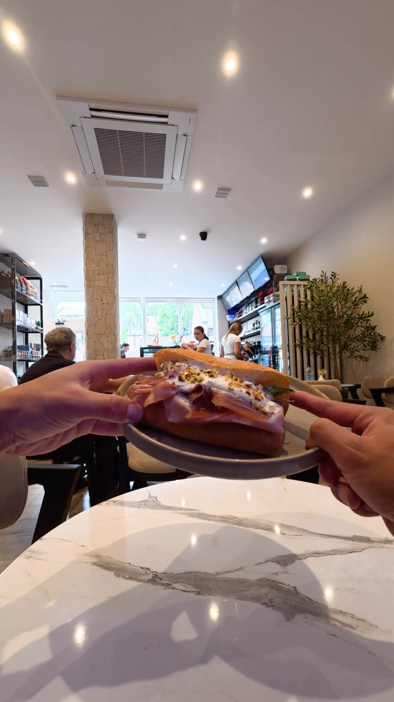
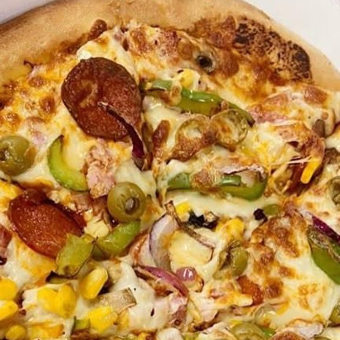
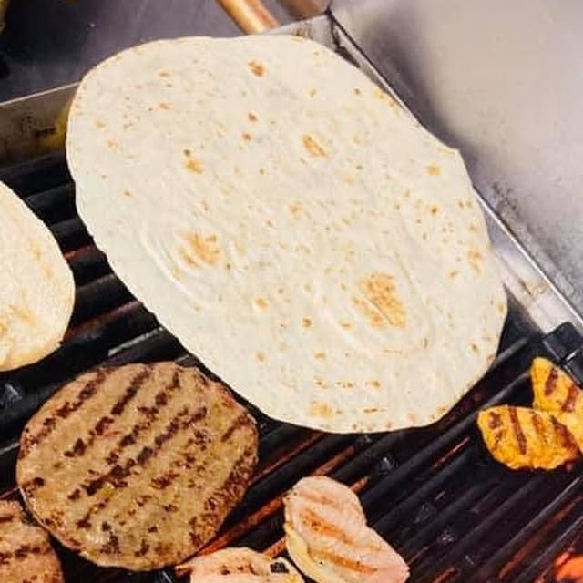
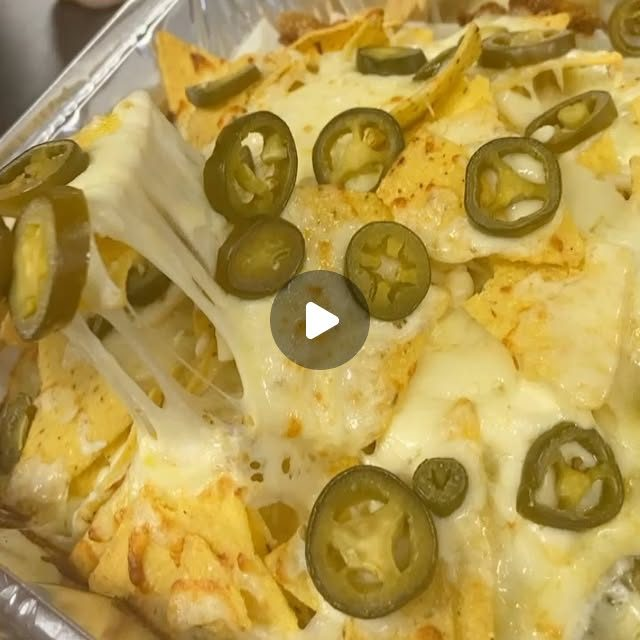
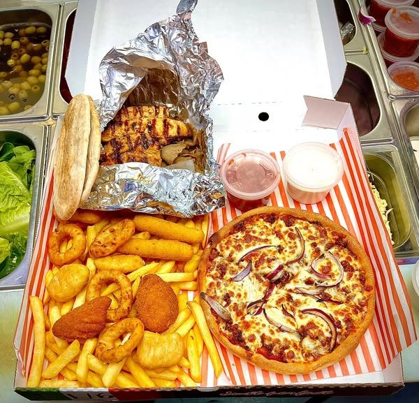
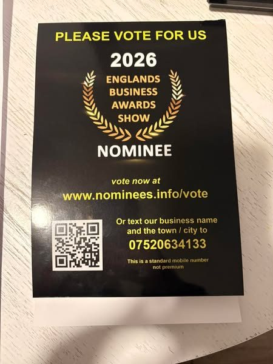
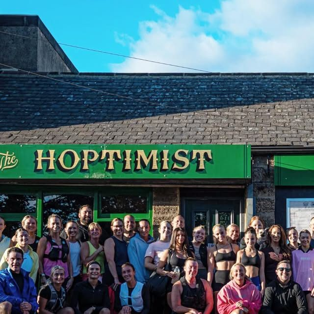
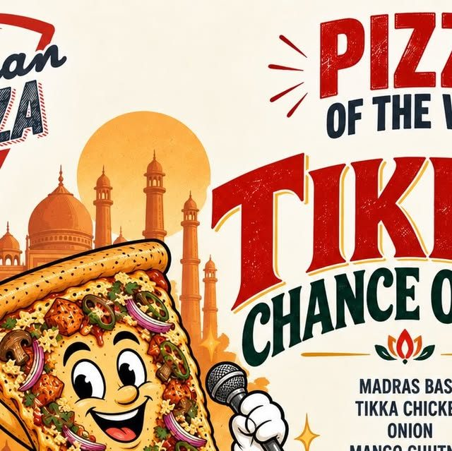

2,700 people follow you on Facebook. Your Instagram went quiet in 2021.
You told us you want regular, engaging posts and someone to come out and film. You are right to. Your Facebook page has a real local audience and your food looks great on camera. We read your website, your Facebook ads, your Instagram and three local takeaways, and set them next to what has worked for the food businesses we film. This is what we found, the videos we would make, and our rates.
Prepared forSabah
Prepared byJay Williams, Fusion Creative
Checked on6 October 2026
CoversWebsite, social, local takeaways, ideas, rates
Great food, a 5 star kitchen, and almost no video.
Chinchilla has the things most takeaways wish they had: hand pushed pizzas, home made burgers, a flame grill, kebabs and fresh cakes, open every night from 4:30pm to 11pm, with your own ordering website and app. You also have 2,700 people following your Facebook page. What is missing is a steady run of short videos with your kitchen, your grill and your team in them, so people in Stakeford, Guide Post and Bedlington think of Chinchilla when they decide what is for tea tonight.
2.7K
people follow your Facebook page
143
Instagram followers. The last post was in January 2021
0
Meta ads running today. About 6 ran over New Year
5
food hygiene rating, inspected March 2025
What is already strong, and worth building on
A 5 star food hygiene rating, with "very good" in all three areas the inspector checked.
Your own ordering website and an app, so customers can order straight from you.
Open and delivering every night of the week, 4:30pm to 11pm.
A flame grill and hand pushed dough. Both look brilliant on video, and your own photos prove it.
A nomination in the England's Business Awards Show 2026, which your own competition ad asked locals to vote for.
Reviews on your site like Keith's: "Another excellent meal delivered on time and fresh from the oven."
You do not need a new menu or a new logo. You need short video of the grill, the dough and the people behind the counter, posted on a plan, so Chinchilla is busy every night and not just at the weekend.
02 · What has worked for places like yours
Real people, in the venue, doing something worth watching.
Nine videos we planned and filmed for restaurants we work with, each a different format: a skit, a dish moment, a trend, a challenge, a launch, a new dish, an offer, a hero product and a local call-out. Every one gives people a reason to watch and a reason to order.
70M
views on one reel for New Greek in Newcastle
3.5M
views on one reel for Takdir in Whitley Bay
+40%
weekly sales for New Greek, in the owner's own words
Skit, 70M viewsNew Greek, Newcastle: "There's always the one impatient customer." A skit at the counter.Dish moment, 3.3M viewsNew Greek, Newcastle: "The ONLY way to eat a Greek salad." One dish, turned into something people argue about.Trend, 535K viewsTakdir, Whitley Bay: A trending format, filmed in the restaurant within days of it taking off.Challenge, 255K viewsNew Greek, Newcastle: "5 bites or less wins £20." A challenge people come in to try.Launch, 92K viewsNew Greek Bakery, Newcastle: "The Taste of Greece has landed in Newcastle." An opening, announced on video.New dish, 90K viewsTakdir, Whitley Bay: "Have you tried our Nachodoms?" A new dish, introduced by a person, not a menu photo.Offer, 67K viewsTakdir, Whitley Bay: "All for £20? Yes please." An offer shown on camera, not just posted as a graphic.

Hero product, 60K viewsNew Greek Bakery, Newcastle: "The best sandwich in Newcastle?" One product, one question.Local call-out, 44K viewsThe Greek Spot, Middlesbrough: "Attention Middlesbrough gyros lovers." A video that speaks to one town.
A reason beats a nice shot. A pizza on its own rarely travels. The same pizza with a joke, a challenge or a deal does.
The shop is the set. Your counter, your grill, your team. We film in the place people order from.
It is planned, not luck. We know which formats work before we arrive, and we pick the mix for your menu and your week.
View counts from our own client dashboard, checked 3 October 2026. Sales figure from the New Greek owner's own review.
03 · Your website
A website that takes orders, with a few things holding it back.
chinchillastakeford.co.uk has your menu, ordering, your opening hours, your address and links to your app. These are the changes we would make so it works harder for the video.
What we saw
Why it matters
Fix
The gallery is stock photos
The section says "Some photos from Our Restaurant", but the four images are from a stock photo library, not your kitchen.
Swap in your own food. The photos below, from your Instagram, already do a better job.
No Meta pixel
Google Analytics is installed, but nothing records visitors for Facebook or Instagram.
Add the Meta pixel so people who look at your menu can be shown your videos again.
Your socials are hard to find
We could not find a link to your Facebook page or your Instagram anywhere on the site.
Link Facebook, Instagram and TikTok in the header and footer.
The reviews section repeats
Most reviews shown are a name and a star rating with no words, and the same list appears twice.
Show five or six written reviews, like Keith's and Janet's, and drop the empty ones.



Photos from your own Instagram. The grill, the dough and the toppings are exactly what we would film.
04 · Your social channels
Facebook has the audience. Instagram has been asleep since 2021.
2.7K
Facebook followers
143
Instagram followers, from 16 posts
28 Jan 2021
date of your last Instagram post
3 to 10
likes on each Instagram post
Your Facebook page is where your customers are. Over New Year you ran about six Meta ads from it, and none are running now. Your Instagram has not posted for more than five years. What we noticed:
The ads were a good start. A loaded box of pizza, chips, wraps and grilled chicken, a menu collage, a staff advert and a competition. The ones we could see ran between 27 December and 15 January, and then stopped.
The competition was the smart one. £20 of food every three days for sharing the post and voting for your awards nomination. It gave people a reason to act, not just look.
Instagram still shows old details. A January 2021 post says you open at 5pm and gives 01670 810222. Your website says 4:30pm and 01670 521222. Anyone who checks Instagram first gets the old version.
Photos alone have not travelled. Every Instagram post earned 3 to 10 likes, whether it was a burger, the flames on the grill or "From dough to delicious". With 143 followers there was no audience to reach yet, and still photos do not get shown to new people the way short video does.
What this means. You already have a local audience on Facebook and food that looks great on camera. Short video of real moments in the shop, posted every week on Facebook, Instagram and TikTok, is how you reach the people who have not ordered from you yet.
Source: facebook.com/chinchillapizzeria via the Meta Ad Library (UK), instagram.com/chinchillapizzeria_stakeford and chinchillastakeford.co.uk, checked 6 October 2026.
05 · Three local takeaways
Who is winning attention around Stakeford, and how.
We looked at three independent takeaways within a short drive of you: one that wins on social, one that wins on price, and one that is advertising right now. We also found a new arrival on your own doorstep. Checked on 6 October 2026.
Venue
Instagram
Meta ads
What gets attention
Best recent post
Chinchilla Pizzeria Ashington Drive, Stakeford
143
About 6, none live
Food photos, a competition
10 likes, in 2020
The Pitman Pizza Co. Front Street, Bedlington
3,955
None, ever
A named pizza of the week, a run club, giveaways
168 likes, a run club night
The Fat Pizza Ashington
0, new account
About 13, none live
Price: "Get Small pizza for just £5"
1 like, first post 5 Oct 2026
Fry Fare Alexandra Road, Ashington
None found
1 live, about 9 in total
Lunchtime delivery and a 10% code
Facebook only, 3K followers
What the numbers say
Pitman shows that Bedlington follows a takeaway with personality. A new named pizza every week, a run club night called "Run for the slice" (168 likes) and a date night giveaway with 369 comments. Not one Meta ad.
The Fat Pizza bought attention with price. About 13 ads last autumn, built around a £5 or £6 small pizza. Price gets attention, but it is the easiest thing for a competitor to copy.
A new competitor has just opened next to you. Since 30 September, the Ashington Eats and Bedlington Eats apps have been advertising Stakeford Cafe & Pizza: all day breakfast, fresh pizza, kebabs and wraps. Now is the time to be the takeaway Stakeford already knows.
Fry Fare keeps one ad running all the time. One simple message about lunchtime delivery, left on since 1 September.
Sources: public Instagram profiles, Facebook follower counts and the Meta Ad Library (UK), 6 October 2026.
06 · What is working in your market
What is already working, in your area and in your account.
Two of your own ads and two from takeaways near you. The common thread is a reason to order tonight, or a reason to join in.

Your loaded boxChinchilla: a full box of pizza, chips, onion rings, a wrap and grilled chicken. This is the shot people stop for, and it would be even better as a video.

Your competitionChinchilla: vote for the awards nomination and share the post for a chance at £20 of food. A reason to take part, not just scroll past.

A local night outThe Pitman Pizza Co.: "Run for the slice", a run club night. 168 likes, their best recent post.

A named specialThe Pitman Pizza Co.: "Tikka Chance On Me", a pizza of the week with a name people remember.
1
Moments, not menus
Flames on the grill, dough being pushed, the loaded box being packed. People share moments.
2
A reason to order tonight
A new special, a challenge, the last order before 11pm. Every video ends with one.
3
People on screen
Your team and your regulars, with permission. Skits and challenges, filmed in the shop.
07 · Twelve videos we would make
Built from your grill, your dough and your team.
Every concept uses something you already have. Six are built to bring orders in this week. Six are built to keep your following growing on Facebook, Instagram and TikTok.
Videos that bring orders in
6 concepts
Skit
"I'm not that hungry"
"Me saying I'll just have a small pizza."
Cut to the full box: pizza, chips, onion rings, a wrap and grilled chicken being packed.
Why: turns your loaded box into a joke everyone recognises.
Challenge
The Mexican burger heat test
"Can you finish the Mexican burger without a drink?"
Jalapeños, chilli sauce and kebab meat. Staff or regulars, one go each, honest faces.
Why: challenges are among the formats that travel furthest for our restaurants.
Challenge
Dough race
"Who can push a pizza base fastest?"
Your pizza maker against a customer or a new starter, timed on camera.
Why: shows off the hand pushed dough and gets people tagging friends.
Skit
The 10:59pm phone call
"When you ring Chinchilla one minute before close."
The phone rings, the team look at the clock, the grill goes back on.
Why: reminds everyone you are open until 11pm, every night.
Local
Stakeford, what's your order?
"Asking Stakeford what they always order from Chinchilla."
Quick answers from customers at the counter, with permission.
Why: real neighbours recommending you to their own town.
Nominee
The awards nominee box
"We got nominated, so we built the box to match."
The team packing a loaded box, with the nomination on screen.
Why: turns your awards nomination into a reason to order this week.
Organic that builds the audience
6 concepts
Series
From dough to delicious
"One ball of dough. Eight minutes later."
Your own 2021 caption, as a weekly video: dough, toppings, oven, box.
Why: a format people look for every week.
Grill
Flames on
"Turn your sound up."
The flame grill at full heat: chicken, burgers, the sizzle.
Why: your flames post was one of your best, and it works even better as video.
Team
Meet the team
"The person who answers your call every night."
One person at a time, 20 seconds each, behind the counter.
Why: people order from people they feel they know.
Reviews
Reading your reviews
"Keith says it was fresh from the oven. Let's check."
Your team reading a real review, then making that order.
Why: turns written praise into something people watch.
Cakes
The bit nobody knows about
"You didn't know we did cakes, did you?"
The fresh cakes, filmed as the surprise at the end of an order.
Why: a second reason to order, and a bigger basket.
Delivery
A night on the road
"Where every Chinchilla order goes on a Friday."
The driver's night in clips, from the counter to the doorstep.
Why: shows how fast and fresh the food arrives.
08 · The plan, month by month
A plan that starts with the busy nights you already have.
Week 1
Plan and set up
A call to pick the first twelve videos, wake up your Instagram with the right hours and number, link your socials from the website and install the Meta pixel.
Week 2
First filming day
A Friday evening service: the grill, the dough, the team and the boxes going out.
Weeks 2 to 4
Posting on a plan
Videos go out on set days on Facebook, Instagram and TikTok, each ending with a reason to order tonight.
Month 2
More of what works
We look at which videos brought orders and followers, and film more of them, plus the next special.
Month 3
Review together
We report what the videos reached, how your following grew and what to do next.
Every month you get: filming in your shop, edited short videos, posting on a plan, and a simple monthly report. You keep every video.
09 · Our rates
Two ways to work with us.
Both include filming in your shop, editing, posting and managing your Instagram and TikTok. Three month minimum, then rolling.
Core
£899
a month, 10 to 12 videos
One filming day a month in your shop
10 to 12 edited short videos
Posting and captions on Instagram and TikTok
A monthly report
Growth
£1,250
a month, 20 to 25 videos
Two filming days a month
20 to 25 edited short videos
Posting, captions and community replies
A monthly report and planning call
Want ads as well? Once the videos are working, we can run Meta ads to Stakeford, Bedlington and Ashington for you. That is a separate service, and we would only suggest it when the content is ready.
10 · Who we are, and next steps
A Newcastle team that films, edits and posts for restaurants.
We come to you, film in your venue, edit in house and post on a plan. We measure what matters to a restaurant: covers, bookings and repeat customers, not likes.
+40%
weekly sales for a Newcastle restaurant, in the owner's own words
87M+
views on content we have made for that one restaurant
70M
views on a single reel, planned and filmed in the venue
Jay Williams and Anya Davey, the founders of Fusion Creative. We film and run ads for businesses across the North East from Newcastle, about half an hour from Stakeford. We would be the people in your shop with the camera, and the people you call about the plan. Our team of editors turns every filming day into finished videos, and either of us can be on camera when a video needs a presenter.
Next steps
A 20 minute call, or a visit to the shop, to pick the first videos.
Then the first filming day on a Friday evening service.


Facebook has the audience. Instagram has been asleep since 2021.
Your Facebook page is where your customers are. Over New Year you ran about six Meta ads from it, and none are running now. Your Instagram has not posted for more than five years. What we noticed:
What this means. You already have a local audience on Facebook and food that looks great on camera. Short video of real moments in the shop, posted every week on Facebook, Instagram and TikTok, is how you reach the people who have not ordered from you yet.
Source: facebook.com/chinchillapizzeria via the Meta Ad Library (UK), instagram.com/chinchillapizzeria_stakeford and chinchillastakeford.co.uk, checked 6 October 2026.